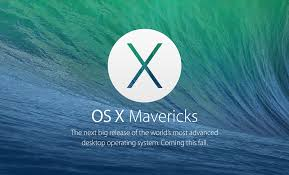

OSX

OS X , precedentemente noto come Mac OS X e' il sistema operativo sviluppato da Apple Inc. per i computer Macintosh, nato nel 2001 per combinare le note caratteristiche dell'interfaccia utente del Mac OS classico con l'architettura di un sistema operativo di derivazione UNIXdella famiglia BSD.
Nonostante il nome utilizzato sino alla versione 10.7.5, Mac OS X è un'altra versione rispetto a Mac OS nato nel 1984 con i primi computer Apple: venne completamente riscritto ed è di fatto un sistema operativo differente, di tipo UNIX certificato IEEE[4] compliant al 100% con lo standard POSIX. Apple ha rilasciato il codice sorgente del kernel del sistema con licenza open source.